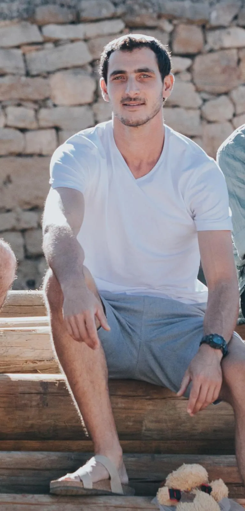
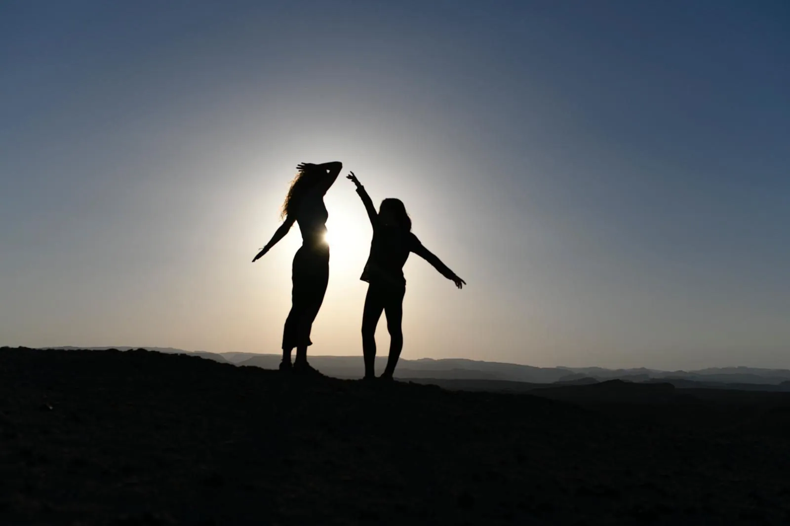
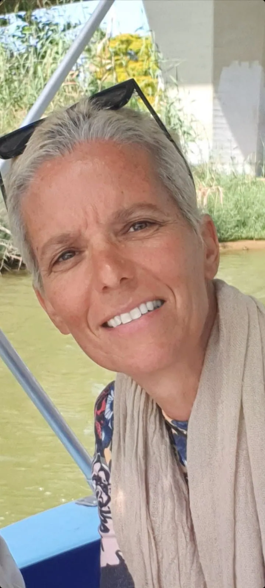
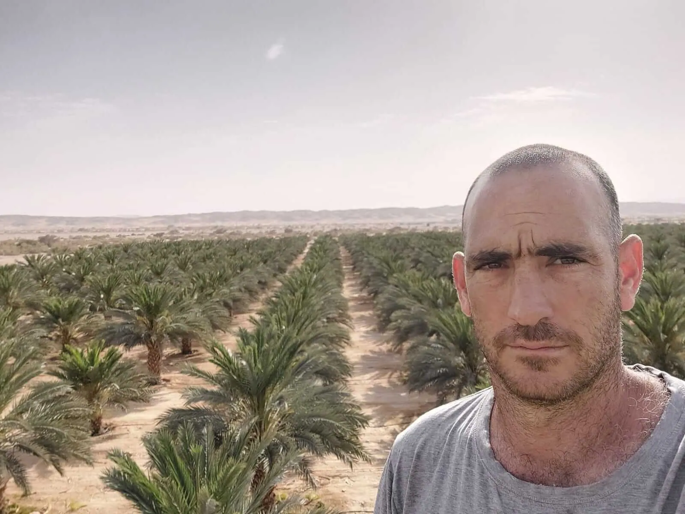
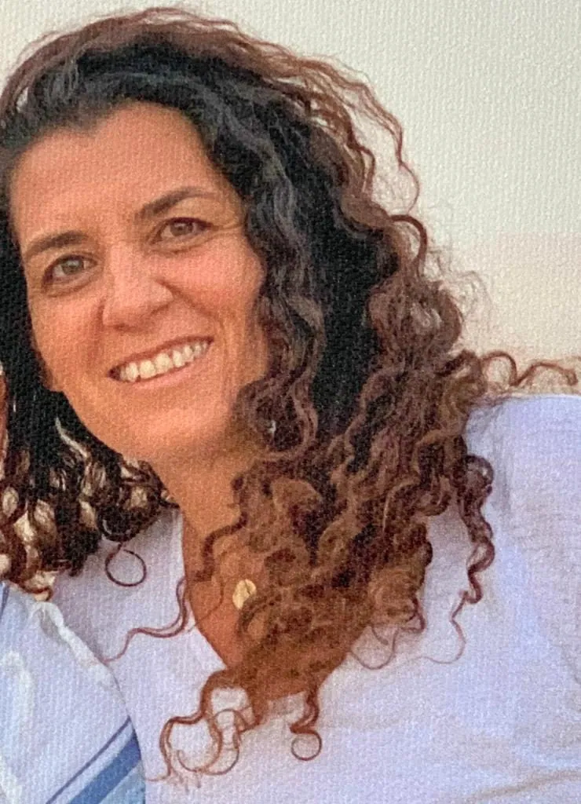

אוריה רוזן
ראש המדרשהנשוי לרוני, בן הגולן. בוגר הישיבה הגבוהה 'רמות' בירושלים. שירת 6 שנים בצה"ל כלוחם ומפקד ביחידה קרבית מסווגת. מדריך שטח בתחום החבלים, ועוסק באומנויות עץ וברזל. איש שטח, פטיש וספר.

"כמדומני שאני שייך לארץ הזאת"
אם תבקשו ממני להגדיר את 'מדרשת הערבה' במילה אחת, היא תהיה: עומק. אנחנו לא מחפשים כותרות גדולות ומילים מפוצצות, אלא דווקא להעמיק בדברים הפשוטים והיסודיים ביותר, אלה שבונים בסופו של דבר את התשתית היציבה ביותר של נפש האדם.
המדרשה יושבת במושב עין יהב, משתלבת בטבע, בנוף ובקהילה הייחודית של הערבה, וסופגת מהם.

בכל בוקר יוצאים לעבודה בשדות הערבה. עבודות פשוטות ומונוטוניות: הדליית פלפלים, קטיף מלונים, שתילת חצילים, גדיד תמרים, דילול פרחים. זה עוזר לחקלאי הערבה וזה עוזר לשמירה על הגבולות, אבל זה גם הרבה מעבר: חזרה לשורש הקיום, למגע הפשוט באדמה. כשאתה רואה יום אחרי יום את השמש עולה מעל הרי אדום ואתה כבר בעיצומו של יום עבודה, זו העמקת שורשים ששום שיעור בכיתה לא יכול להתחרות בה.
הלימוד במדרשה הוא סביב ספרים מכוננים. בדיוק כמו בשורות שבשדות, גם כאן לומדים דף אחרי דף, פרק אחרי פרק, ביסודיות ובעומק: סיפורה של תרבות המערב, פרקי אבות, ספר הטאו, שמונה פרקים לרמב״ם, שיטת אדלר בחינוך, תולדות הישראליות, לימודי מזרח ואסלאם.
חיי הקבוצה והחיבור הקהילתי חשובים מאוד בכל תכניות המדרשה. הקבוצה מתפקדת באופן עצמאי, מהנסיעה לשדות ברכבי התכנית ועד הניהול השוטף של חיי היומיום. החוויה האנושית, והיכולת להיות חלק מקבוצה שמטרתה גדולה מסך חבריה, הן חלק מכריע בתכניות.

נשוי לרוני, בן הגולן. בוגר הישיבה הגבוהה 'רמות' בירושלים. שירת 6 שנים בצה"ל כלוחם ומפקד ביחידה קרבית מסווגת. מדריך שטח בתחום החבלים, ועוסק באומנויות עץ וברזל. איש שטח, פטיש וספר.

תושבת עין יהב, אמא לארבעה. בעלת תואר שני במנהל עסקים, אבל אוהבת את התחום החינוכי הרבה יותר.

נשוי לנרי ואב לארבעה. איש הערבה: חקלאי, יזם ומכור לאקסטרים. נולד במרפאת עין יהב ומאז לא עזב. ייסד שותפות לגידול תמרים ומנהל אותה עד היום, והקים חברה להשכרת אופנועים לטיולים. נהג אמבולנס, משרת במילואים בשריון ומתנדב במגוון רחב של עשייה ציבורית.

נשוי ואב לארבעה, מתגורר במושב קשת ברמת הגולן. למד ולימד כעשר שנים בבתי מדרש קלאסיים ברוח הרב קוק, וכבר 7 שנים מלמד במכינות הערבה ובמדרשת הערבה.

נשואה ללירון ואמא לאורי, יאיר וזוהר. תושבת מושב חצבה, שבו גדלה. מנחה קבוצות ומלווה חינוכית בשיטת אדלר. עובדת בעמותה מאז 2012. אוהבת את הערבה ואת מה שהיא מייצגת: אנשים, טבע וחקלאות.

נשוי ליעל ואבא לשלושה, תושב מושב כפר ורבורג. בעברו רפתן, ראש מכינת עין פרת וראש תכנית "עבודה עברית" בערבה. מלמד במדרשה קורסים על היסודות הפילוסופיים של תרבות המזרח ושל תרבות המערב.
על החולצה של המדרשה מופיע המשפט "כמדומני שאני שייך לארץ הזאת". מאיפה הוא הגיע, ומה הוא אומר?
לפני קרוב ל-90 שנה כתב ש"י עגנון מכתב לאסתר רעייתו, ששהתה בגרמניה, אחרי הטיול הראשון שערך בארץ ישראל. הוא תיאר בו את מסעו במדבר יהודה ובים המלח, בלי לחסוך בתיאורי הקושי:
"אסתרליין יקירתי, ראשית אודיעך כי שבתי בשלום מים המלח ירושלימה. ואת אל תעצבי אם תמצאי בעתון אשר אנכי שולח לך היום על דבר קושי הדרך. כי שלושה ימים הייתי על הים ושני לילות לנתי על הקרקע התחוח לאור מדורה והגשם ירד עלי ממעל והאדמה היתה רטובה תחתי..."
ואחרי התיאורים כיצד נרטב מהגשם בלילות על האדמה התחוחה, הוא מוסיף:
"הנני נשבע לך כי אפילו תיכף ומיד הנני מוכן ומזומן לעשות את הדרך ההיא עוד פעם, כי נפלאות ראיתי בארץ!"
למרות הקושי, עגנון עולץ ומוכן לצאת שוב לדרך הקשה, תכף ומיד. ואז הוא מוסיף משפט מופלא:
"כמדומני שאני שייך להארץ הזאת"ש"י עגנון
עגנון, שכבר ביקר בארץ כמה פעמים קודם לכן, מרגיש שייך אליה באמת רק אחרי המגע הבלתי אמצעי איתה: הלינה על הארץ, הגשם שיורד עליו, הקרבה לאדמה התחוחה והמדורה בלילות. ובכל אתגר הוא מוצא שמחה: "וכשהיתה הסערה הגדולה ויש מן הנוסעים אשר בכו, צהל רוחי למראה הגלים ותפארת הלילה, ואף רגע לא התאוננתי ולא התחרטתי".
החזון של מדרשת הערבה הוא לגדל אנשים שבסופו של דבר פשוט מרגישים "בני ובנות הארץ הזאת". לא כהרגשה סתמית, אלא כהרגשה עמוקה, שנולדת מעמל ויגיעה בדברים שדרכם מגיעים לחיבור אמיתי: אדמה, אדם ומורשת.
היכרות עם אדמת הארץ הטובה, דרך עבודה יומיומית בחקלאות בערבה וסיורים מעמיקים ברחבי הארץ. היכרות עם האדם: קודם כל עם עצמי ועם המידות שלי, אחר כך עם מרחבי החברה הישראלית על כל גווניה, ולבסוף עם המורשת העשירה של העם היהודי, ובפרט עם הסיפור היהודי המתחדש בארץ ישראל.
מתוך החיבור לאדמה, לאדם ולמורשת, ומתוך חינוך לעשייה, לעבודה קשה מתוך שמחה ולקיחת יוזמה ואחריות, אנו מייחלים שמהמדרשה ייצאו אנשים עם אש בוערת בחזה, להתנדב ולתקן בכל מקום שיידרשו.
ההרשמה לתכניות זמן ערבה פתוחה.